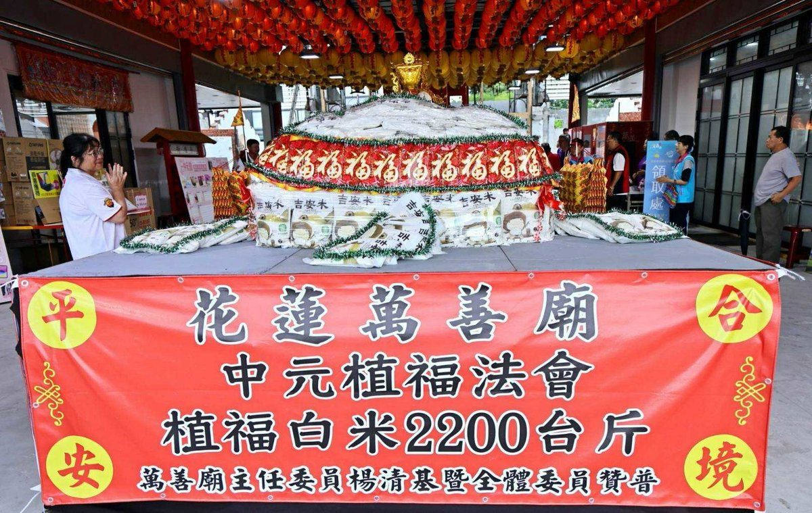
吉安仁里萬善廟中元普渡 2200斤米暖弱勢
吉安鄉仁里萬善廟於農曆七月舉辦中元普渡法會，適逢主神陳聖公聖誕212週年。廟方準備2200斤在地吉安好米，號召信眾捐贈鄉公所轉贈弱勢家庭；並首設寵物蓮座懷念往生毛孩，祭品捐流浪動物之家。鄉長游淑貞讚許信仰傳承結合慈善助人…
閱讀全文 →
吉安鄉仁里萬善廟於農曆七月舉辦中元普渡法會，適逢主神陳聖公聖誕212週年。廟方準備2200斤在地吉安好米，號召信眾捐贈鄉公所轉贈弱勢家庭；並首設寵物蓮座懷念往生毛孩，祭品捐流浪動物之家。鄉長游淑貞讚許信仰傳承結合慈善助人…
閱讀全文 →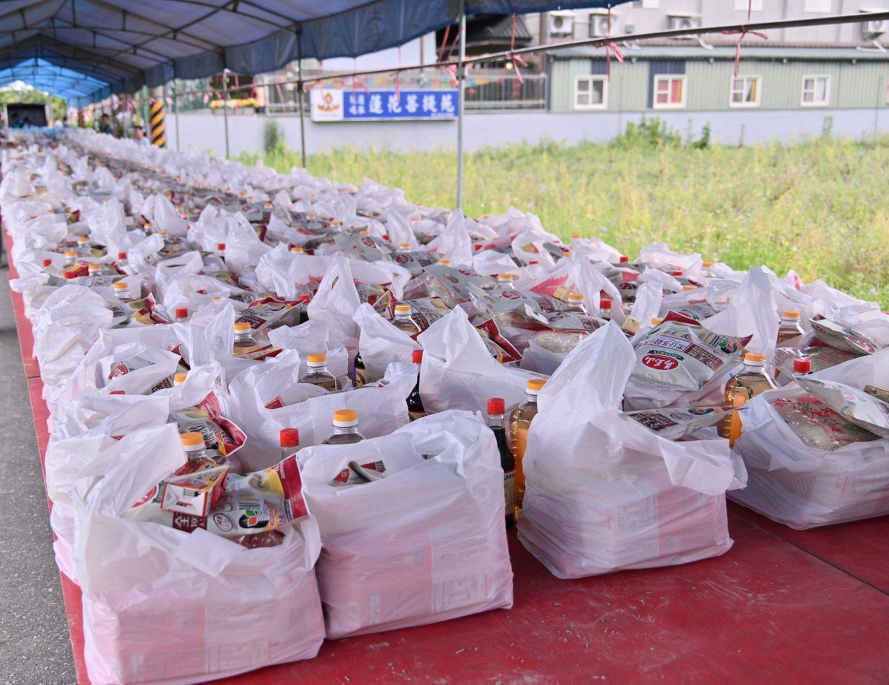
吉安鄉在地宮廟中元普渡捐贈物資送愛，噶舉蓮花菩提苑捐300份生活物資、北天宮捐210包白米重達1400斤，游淑貞鄉長親頒感謝狀，物資將彙整轉發弱勢家戶。…
閱讀全文 →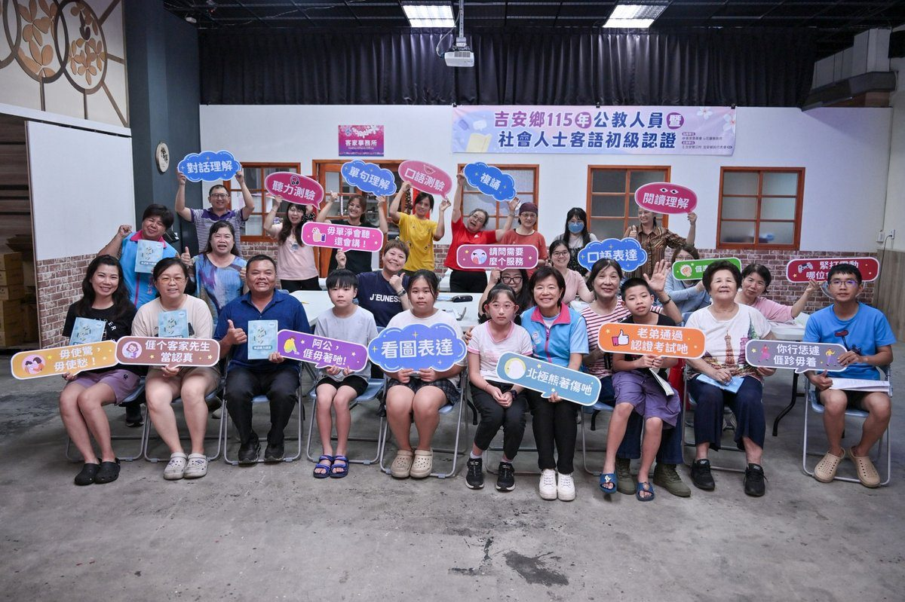
吉安鄉公所運用客委會獎勵金開辦3班客語初級認證班，約80位學員涵蓋多元族群，86歲樂齡學員與國小生同堂學習，讓客語從認證語言成為生活語言。…
閱讀全文 →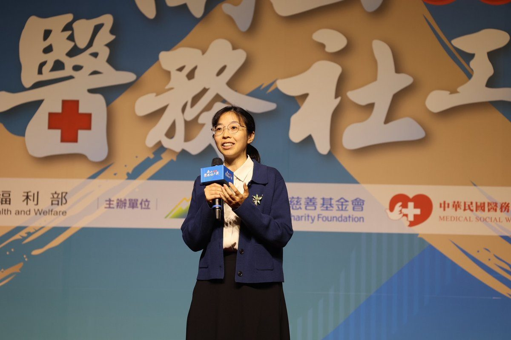
花蓮慈濟醫院醫務社工師卓依蒨深耕14年，從急重症介入到善終陪伴，為東部弱勢整合151件案例、媒合逾940萬元補助，獲第九屆南山醫務社工獎個人組優秀獎。…
閱讀全文 →花蓮縣豪雨與大規模崩塌警戒下，吉安鄉長游淑貞緊急啟動合約養護機構機制，跨域協助秀林鄉文蘭、銅門地區鄉親撤離安置。吉安國小開設收容所，連結20個協力廠商投入物資與場地，並主動協調安養及養護機構提供床位，讓臥床鄉親獲得專業護…
閱讀全文 →榮光抽水站鄰近沿海，長期受鹽霧侵蝕，設備維護至關重要。因應強降豪雨威脅，吉安鄉長游淑貞於8月24日下午率公所團隊前往東昌村榮光抽水站，實地檢視抽水機組、發電設備、備援系統與柴油存量試運轉情形，確認雙機每秒可抽排2立方公尺…
閱讀全文 →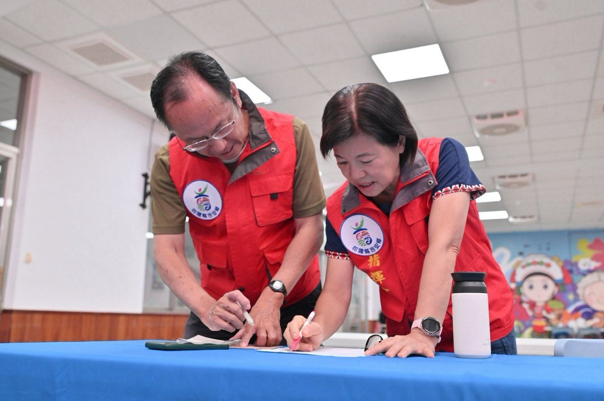
受連日強降雨影響，花蓮縣吉安鄉山區土石流潛勢區警戒升級，福興村於8月24日下午被列為紅色警戒區。鄉長游淑貞率應變團隊，聯合警消、國軍、村長與村幹事提前撤離福興、太昌、慶豐、南華等村共45戶110人，並感謝各單位冒雨協助潛…
閱讀全文 →新城分局組成專案小組，會同霹靂小組攻堅新城鄉民宅職業賭場，當場查獲23人並查扣十餘萬元贓款與賭具。…
閱讀全文 →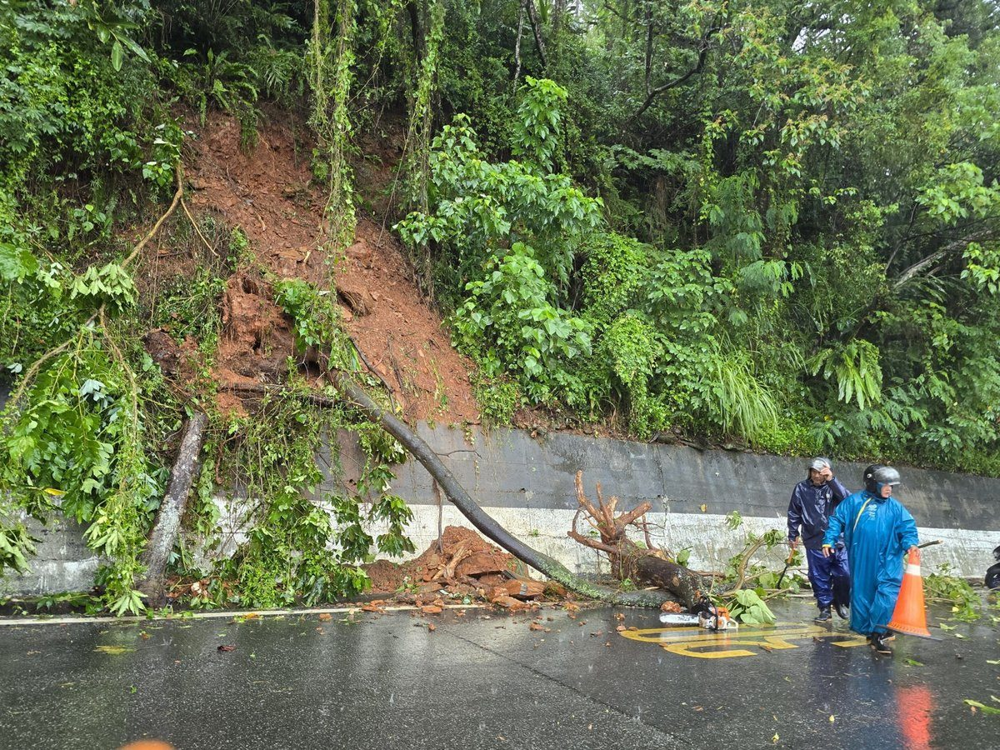
受第24號熱帶性低氣壓及低壓帶影響，花蓮出現局部豪雨等級強降雨。吉安鄉公所今（24）日自主啟動防災應變機制，各課室全體進駐盤點易淹水區與保全戶，清除慈雲山園區道路倒木，並籲請民眾遠離河川，守護鄉親安全。…
閱讀全文 →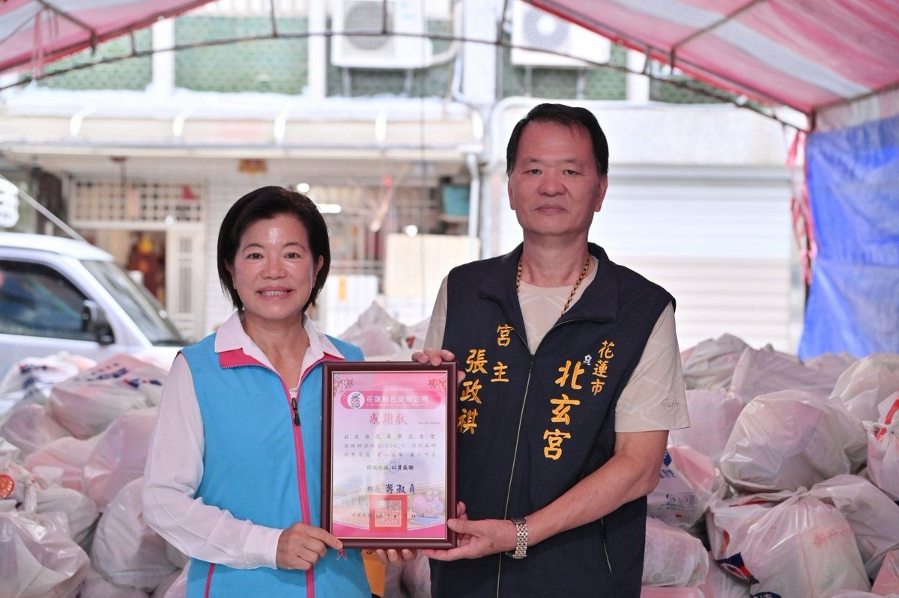
花蓮市北玄宮連續八年於中元普渡時節捐贈愛心物資，今年由宮主張政祺率志工捐出200份綜合物資給吉安鄉公所，鄉長游淑貞頒發感謝狀並盼拋磚引玉，號召各界加入公益行善，將善心精準送達弱勢家庭。…
閱讀全文 →花蓮縣政府宣布，8月24日全縣停止上班、停止上課一天。中央氣象署晚間預報顯示花蓮豪雨預測雨量已達停班停課標準，加上萬里溪發布黃色警戒、蘇花公路與富里六十石山陸續傳出落石、馬太鞍溪堰塞湖仍具潛在風險，縣府為防範複合型災害宣…
閱讀全文 →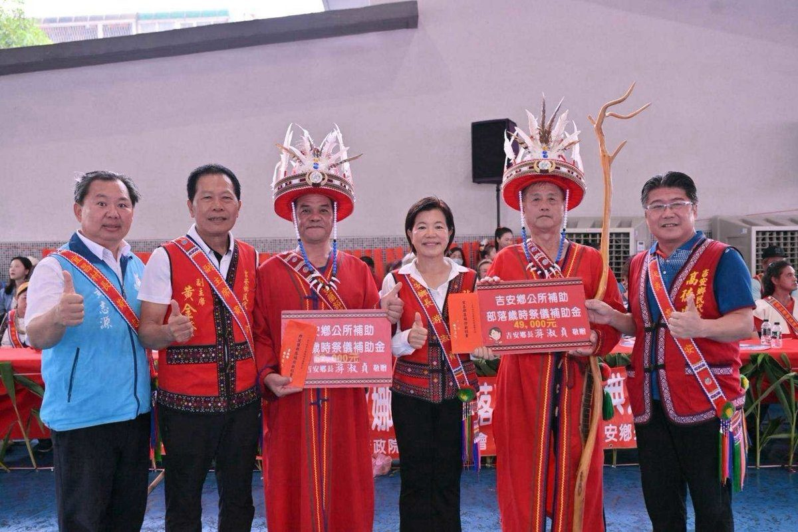
吉安鄉那荳蘭與宜昌部落今（23）日連袂舉辦豐年祭，於那荳蘭部落聚會所熱鬧登場，雖然下雨仍湧入大量遊客與返鄉族人。鄉長游淑貞與部落頭目、貴賓共同見證青年返鄉投入祭典籌備，老中青幼接續展現歌舞才藝，彰顯阿美族歲時祭儀的文化韌…
閱讀全文 →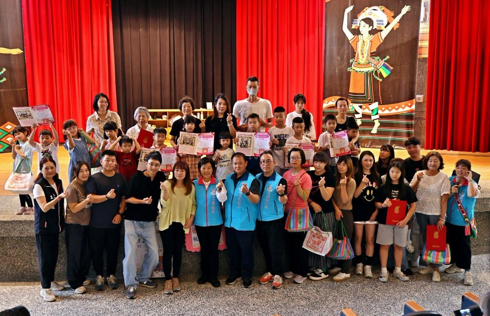
吉安鄉公所舉辦115年度祖父母節藝文活動，邀請林座劇團演出原創舞台劇《桃太郎的願望》，鄉長游淑貞與超過200位鄉親祖孫同堂看戲。活動融合親子劇場、閱讀推廣與祖孫合影，深耕孝親感恩文化，並於慶豐閱覽室展出22組家庭珍貴畫面…
閱讀全文 →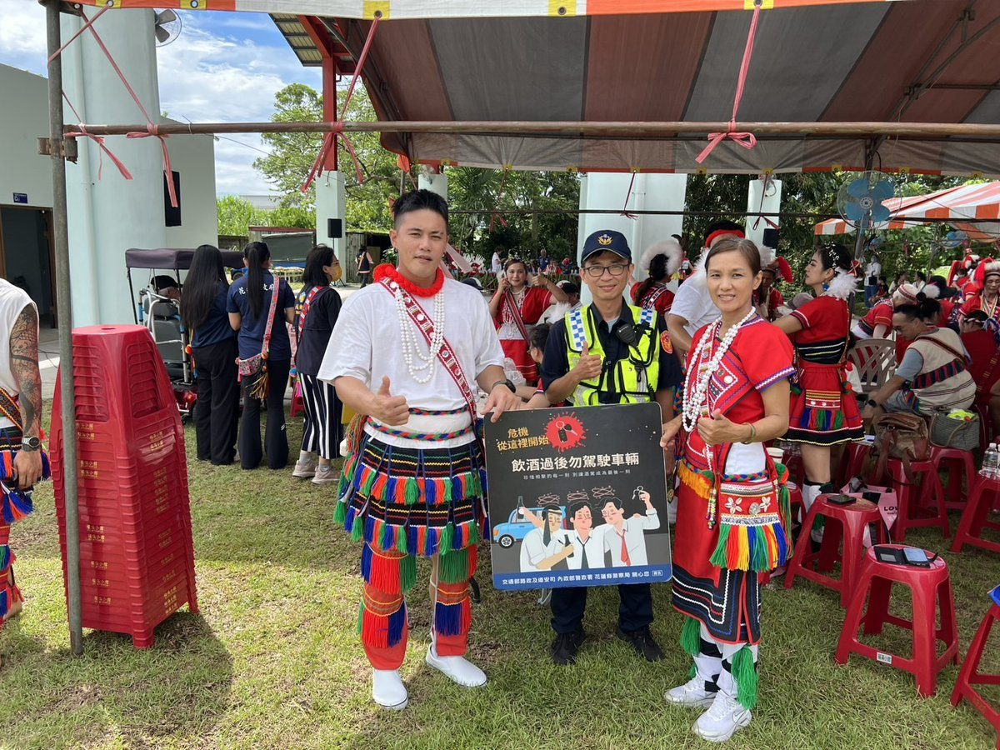
花蓮新城警分局於豐年祭現場深入部落，針對酒駕防制、反詐騙及防竊進行宣導，提醒返鄉族人飲酒後勿駕車，並鼓勵民眾主動通報可疑人車，透過警民合作共同守護部落治安與交通安全。…
閱讀全文 →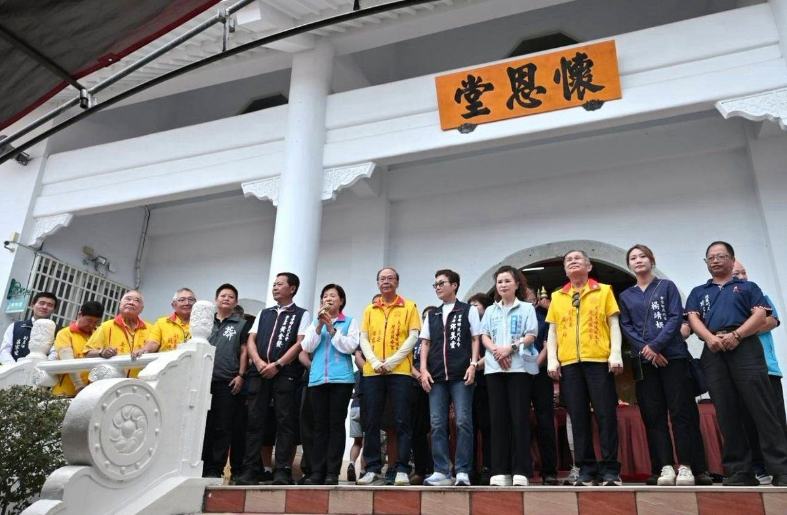
吉安鄉115年中元祈福普渡法會22日下午於慈雲山舉行，鄉長游淑貞率團隊主持，推廣環保心燈祭祀，並宣布慈雲山納骨櫃體重建案獲縣府補助4,000萬元，將提升抗震安全性。…
閱讀全文 →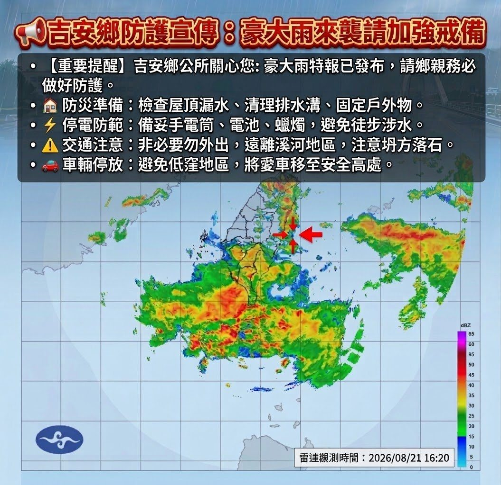
可樂電子報小編/編輯 今（21）日下午4時30分，吉安鄉公所接獲中央氣象署發布國家級降 […]…
閱讀全文 →吉安羽壇小將許林紘、董鈺竤於2026年林丹盃海峽兩岸青少年羽球精英賽揚威，分別拿下U12男子雙打第五名與U8分組賽冠軍，董鈺竤更獲最佳運動員交流獎。吉安鄉長游淑貞貼紅榜表揚，肯定孩子們的努力與堅持。…
閱讀全文 →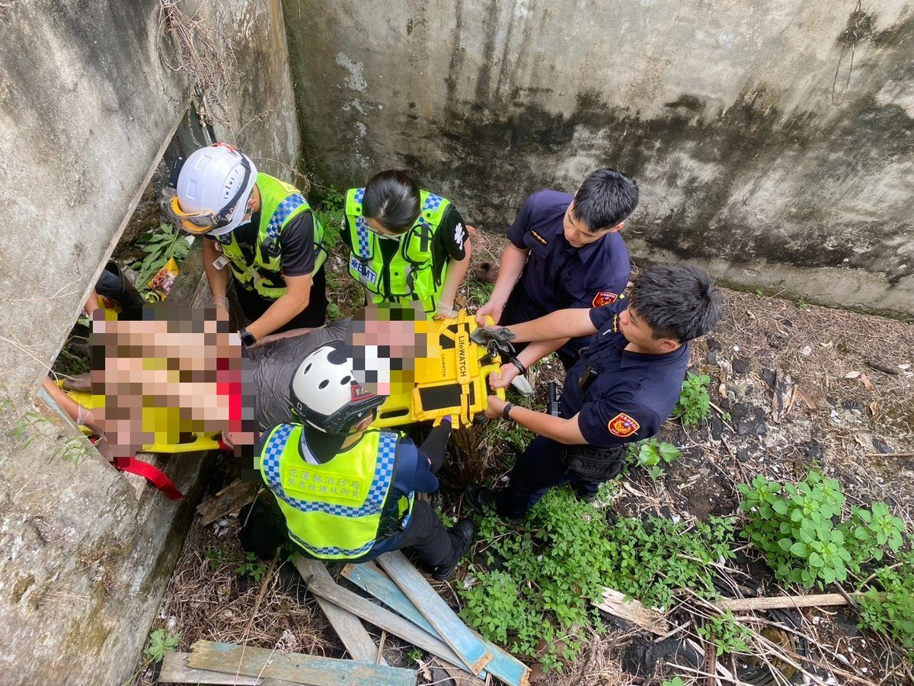
花蓮縣新城警分局與消防隊聯手，成功救援一名失足跌落深溝的醫院失聯病患。員警迅速反應，破壞障礙開闢通道，與消防人員緊密配合，將患者安全送醫。此次行動彰顯警消高效合作，呼籲民眾關心家人，緊急狀況速向警方求助。…
閱讀全文 →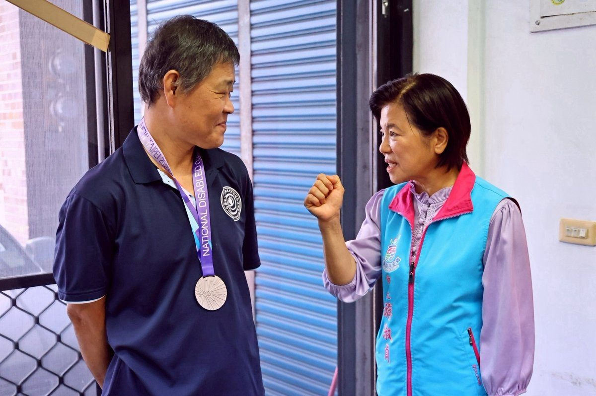
吉安鄉北昌村保齡球好手洪基銘，於全國身心障礙國民運動會視障男子組保齡球賽事中勇奪銀牌。吉安鄉長游淑貞親往家中貼紅榜並頒發獎勵金，表彰洪基銘不畏身體限制、突破自我，為花蓮與吉安爭光的卓越成就。…
閱讀全文 →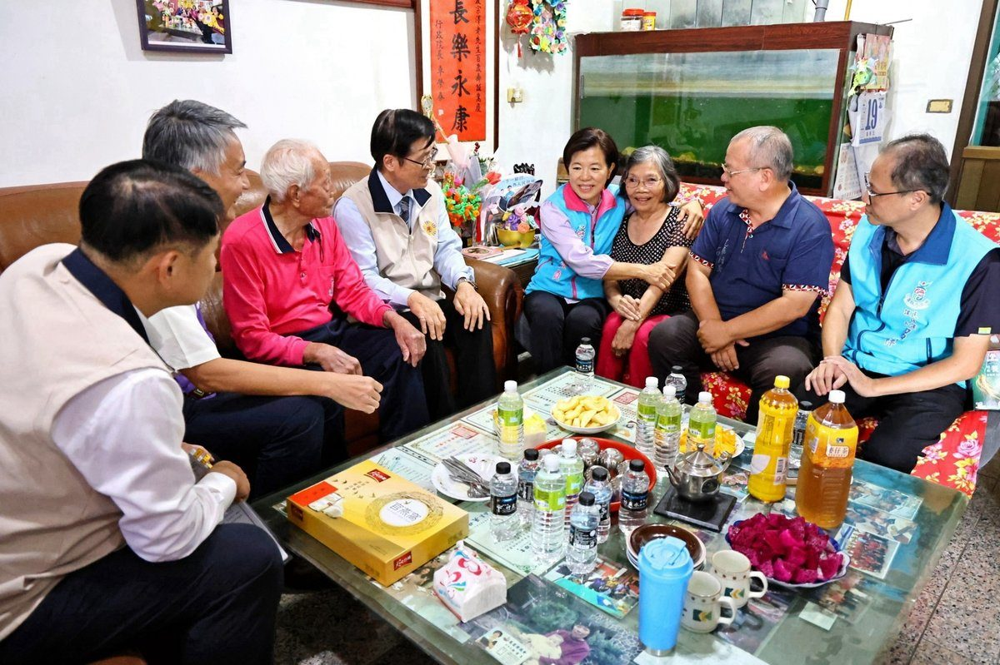
國軍退除役官兵輔導委員會主委嚴德發十九日與吉安鄉長游淑貞，前往光華村登門拜訪百歲榮民夏宗澤，聽他細述當年投身花蓮開墾的艱辛歲月，並致贈禮盒致意，感謝他為國家與地方建設的辛勞付出。…
閱讀全文 →